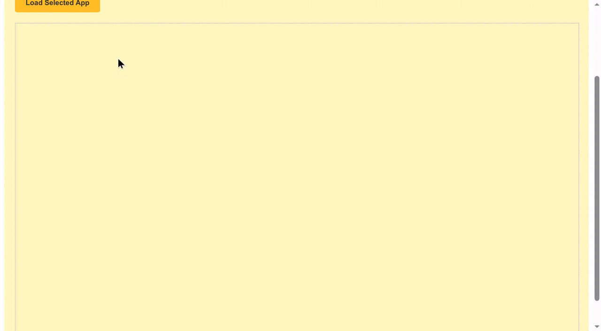

A2UI Dynamic Rendering within MCP Applications¶
This guide shows you how to serve rich, interactive A2UI interfaces within MCP Apps using Tools and Embedded Resources. By the end, you'll have a working MCP server that returns an MCP App which can render A2UI components and handle A2UI interactions. By supporting native A2UI within MCP Apps, your MCP server can securely collaborate with remote agents while maintaining consistency over UI styling.

Prerequisites¶
- Python 3.10+
- uv — fast Python package manager
- Node.js 18+ (for the MCP Inspector)
Quick Start: Run the Sample¶
For detailed instructions on how to run this sample, please refer to the README.md.
Architecture Overview¶
The system consists of three main actors interacting through a chain of communication:
- Client Host Application: The outer container (e.g., an Angular app) that connects to the MCP Server and hosts the secure sandbox for the MCP App.
- MCP Application (Sandboxed): The untrusted third-party web application (e.g., a Lit or Angular micro-app) running inside a double-iframe sandbox. This app contains the A2UI surface.
- MCP Server: The backend server providing the application resources and handling tool calls.
flowchart TD
%% Style Definitions
classDef client fill:#e8f0fe,stroke:#1a73e8,color:#185abc,stroke-width:2px
classDef server fill:#f1f3f4,stroke:#3c4043,color:#202124,stroke-width:2px
classDef agent fill:#eef3fc,stroke:#74a0f7,color:#185abc,stroke-width:2px
%% 1. Top: AI Agent Environment
subgraph AgentEnv ["Server-Side Environment"]
direction LR
Agent["Generative A2UI Agent (e.g., Smart Agent)"]:::agent
MCPServer["MCP Server"]:::server
end
%% 3. Bottom: Client-Side Environment
subgraph ClientEnv ["Client-Side Environment"]
Host["Client Host Application"]:::client
subgraph SandboxBound ["Double-IFrame Sandbox"]
subgraph McpApp ["MCP App (e.g., Editor App)"]
direction TB
%% Added a dedicated node for the app logic to prevent child-to-parent layout collapse
AppLogic["Web Native App<br/>(e.g., Editor Panel)"]:::client
A2UISurface["A2UI Surface<br/>(e.g., Controls Panel)"]:::client
AppBridge["App Bridge"]:::client
A2UIRenderer["A2UI Rendering Engine"]:::client
end
%% Changed connection to target the node inside, not the subgraph wrapper
AppBridge -->|"A2UI JSON"| A2UIRenderer
A2UIRenderer -.->|"Mounts & renders dynamic controls inside"| A2UISurface
A2UISurface -->|"User Action<br/>(e.g., Generate text)"| AppBridge
AppLogic -->|"Context Trigger<br/>(e.g., Highlight text)"| AppBridge
AppBridge -->|"Update (e.g., Revised text)"| AppLogic
A2UISurface -->|"Update<br/>(e.g., Accept/Reject)"| AppLogic
end
Host <-->|"postMessage Bridge"| AppBridge
end
%% --- Strictly Vertical Stacking Connections ---
Agent <==>|"Delegation & Payload"| MCPServer
MCPServer <==>|"MCP Protocol"| Host
%% --- Local Context Flow Indicators ---
%% Updated links to point to AppLogic instead of the McpApp subgraphDeep Dive: The Communication Flow¶
A key aspect of this pattern is that the MCP App renders the A2UI payloads directly, rather than relying on the Client Host Application to do so.
Loading A2UI Components in MCP Apps¶
Here is the sequence of events for dynamically loading A2UI components into MCP Apps:
- Trigger: The MCP App decides it needs to fetch or update UI content (e.g., on initialization or via a user-initiated Action).
- Request: The MCP App sends a JSON-RPC request to the Host via
window.parent.postMessage.- Example Method:
ui/fetch_counter_a2ui
- Example Method:
- Relay: The Sandbox Proxy relays this message to the Client Host.
- MCP Call: The Client Host translates this custom message into a standard MCP
tools/callrequest to the MCP Server.- Example Tool:
fetch_counter_a2ui
- Example Tool:
- Response: The MCP Server executes the tool and returns a result containing an
application/json+a2uiresource. - Response forwarding: The Host receives the tool result and forwards it back down through the Sandbox Proxy to the MCP App.
- Rendering: The MCP App extracts the A2UI JSON payload from the resource and feeds it into its local A2UI
MessageProcessor, which updates the A2UI surface dynamically.
Handling User Actions¶
Interactivity within the rendered A2UI surface is handled by reversing the flow:
- A user clicks a button within the A2UI surface inside the MCP App.
- The A2UI component triggers a
userAction. - The MCP App captures this event via the A2UI
MessageProcessor.eventssubscription. - The MCP App packages the action and sends it as a JSON-RPC message to the Host (e.g.,
ui/increase_counter). - The Host calls the corresponding tool on the MCP Server.
- The Server returns a new A2UI payload (representing the updated state), which is piped back to the MCP App to update the rendering.
Sequence Diagram¶
sequenceDiagram
participant Server as MCP Server
participant Host as Client Host Application
participant Proxy as Sandbox Proxy
participant App as MCP App (Sandbox)
participant A2UI as A2UI Surface
rect rgb(240, 248, 255)
Note right of Server: INITIALIZATION & LOADING
Note over Host: 1. Loaded from Hosting server
Host->>Server: 2. Fetch MCP App resource
Server-->>Host: Return MCP App resource
Host->>Proxy: 3a. Load Sandbox Proxy
Proxy->>App: 3b. Serve App in isolated iframe
Note over App: 4. User action triggers resource request
App->>Proxy: Request tool call
Proxy->>Host: Relay Request
Host->>Server: Forward Tool Call
Server-->>Host: 5. Respond with A2UI JSON payload
Host->>Proxy: Relay payload
Proxy->>App: 6. Hand down payload to MCP App
App->>A2UI: 7. Renders A2UI Components
end
rect rgb(255, 245, 238)
Note right of Server: USER INTERACTION
Note over A2UI: Click on A2UI Button
A2UI->>App: 8. A2UI Button triggers UserAction
Note over App: 9. Translate A2UI UserAction to JSON-RPC message
App->>Proxy: Forward JSON-RPC message
Proxy->>Host: Relay JSON-RPC message
Note over Host: 10. Map Action to Tool Call
Host->>Server: Forward Tool Call
Server-->>Host: 11. Respond with A2UI payload (datamodelupdate)
Host->>Proxy: Relay payload
Proxy->>App: 12. Pipe payload to MCP App
App->>A2UI: Update rendering
endHow to Implement¶
To build your own MCP App with A2UI capabilities, follow these steps:
Step 1: Inlining the Renderer¶
MCP Apps are typically delivered as a single HTML resource from the MCP Server. To achieve this with a modern framework like Angular or React:
- Build your application normally to produce static assets (
index.html,.js,.css). - Use a post-build script (like the
inline.jsscript in the sample) to read theindex.htmland replace external<script src="...">and<link rel="stylesheet" href="...">tags with inline<script>and<style>tags containing the actual file contents. - This produces a self-contained HTML file that can be safely loaded via
srcdocin the restricted iframe.
Using Vite to inline
If your project uses Vite (common for React, Vue, or Lit), you can achieve the same single-file output automatically using plugins like vite-plugin-singlefile. This eliminates the need for a custom post-build script by handling the inlining during the build process itself.
How to use it:
-
Install the plugin:
-
Configure Vite: Add the plugin to your
vite.config.ts(or.js):import {defineConfig} from 'vite'; import {viteSingleFile} from 'vite-plugin-singlefile'; export default defineConfig({ plugins: [viteSingleFile()], });This will ensure that all JS and CSS assets are inlined into the
index.htmlfile on build, making it ready to be served by your MCP server as a single resource.
Step 2: Leveraging A2UI-over-MCP¶
Your inlined app is now running in the sandbox. To leverage A2UI:
- Include the A2UI Angular/Lit libraries in your app's bundle.
- Define a communication contract with your Host to interact with the MCP Server.
- When you receive the response from the Host, look for the
application/json+a2uimimeType in the content. - Parse the JSON text and pass it to the A2UI
MessageProcessor.
Example: Fetching and Rendering A2UI
// 1. Request A2UI data from Host
const result = await callHostMethod('ui/fetch_counter_a2ui');
// 2. Find and parse the A2UI resource
const a2uiResource = result.find(
c => c.type === 'resource' && c.resource?.mimeType === 'application/json+a2ui',
);
if (a2uiResource?.resource?.text) {
const messages = JSON.parse(a2uiResource.resource.text);
this.processor.processMessages(messages);
}
// Utility for JSON-RPC communication
function callHostMethod(method: string, params: any = {}): Promise<any> {
return new Promise((resolve, reject) => {
const requestId = `${method}-${Date.now()}`;
const handler = (event: MessageEvent) => {
if (event.data.id !== requestId) return;
window.removeEventListener('message', handler);
if (event.data.error) {
reject(event.data.error);
} else {
resolve(event.data.result);
}
};
window.addEventListener('message', handler);
window.parent.postMessage(
{
jsonrpc: '2.0',
id: requestId,
method,
params,
},
'*',
); // Note: Replace "*" with explicit target origin in production
});
}
Step 3: Handling User Actions on A2UI Components¶
To handle interactivity within the rendered A2UI surface, your MCP App must capture A2UI events and forward them to the Host using JSON-RPC.
Example: Handling User Actions
// Subscribing to A2UI events in the MCP App ([main.ts](https://github.com/google/A2UI/blob/main/samples/mcp/a2ui-in-mcpapps/server/apps/src/src/main.ts))
this.processor.events.subscribe(async event => {
if (!event.message.userAction) return;
const method = `ui/${event.message.userAction.name}`;
const params = event.message.userAction.context;
try {
// Translate A2UI UserAction to JSON-RPC, send to Host, and await response
const result = await callHostMethod(method, params);
// Parse the updated A2UI payload and update the rendering
const messages = extractA2UIMessages(result);
if (messages) {
this.processor.processMessages(messages);
}
} catch (error) {
console.error(`Error handling user action[${method}]:`, error);
}
});
This pattern enables the MCP App to serve as a dynamic interface for the MCP Server's A2UI capabilities while maintaining strict security isolation.
Inlined MCP App HTML Pseudocode¶
To put this all together, here is an HTML mockup representing a compiled and inlined MCP Application. It defines the placeholder UI with a native <a2ui-surface> element, initializes the AppBridge to communicate with the outer host, fetches its dynamic A2UI layout on load, and processes events using the loaded A2UI SDK:
<!DOCTYPE html>
<html lang="en">
<head>
<meta charset="UTF-8" />
<title>Inlined MCP App Surface</title>
<!-- Assumes the standard A2UI SDK script is bundled or loaded -->
</head>
<body>
<div>
<h3>MCP App (Editor Panel)</h3>
<p>This text is native to the sandboxed third-party app.</p>
<!-- A2UI Surface custom element provided by the A2UI SDK -->
<a2ui-surface surfaceId="recipe-card"></a2ui-surface>
</div>
<script>
// Note: The pseudocode below assumes AppBridge from @modelcontextprotocol/ext-apps
// and a2uiProcessor from the A2UI SDK are preloaded or inlined.
const bridge = new AppBridge({name: 'editor-panel', version: '1.0.0'});
// Helper to extract and process dynamic A2UI responses from tool results
function processA2UIResponse(result) {
const a2uiResource = result?.content?.find(
c => c.type === 'resource' && c.resource?.mimeType === 'application/json+a2ui',
);
if (a2uiResource?.resource?.text) {
const payload = JSON.parse(a2uiResource.resource.text);
window.a2uiProcessor.processMessages(payload);
}
}
// 1. Initialize AppBridge and fetch initial controls
async function initApp() {
await bridge.connect();
// Call server tool to load initial layout controls
const result = await bridge.callServerTool({name: 'fetch_controls', arguments: {}});
processA2UIResponse(result);
}
// 2. Handle interactive User Actions routed by the A2UI SDK
window.a2uiProcessor.events.subscribe(async event => {
if (!event.message.userAction) return;
const action = event.message.userAction;
// Route the user action directly via the bridge to the MCP Server tool
const result = await bridge.callServerTool({
name: action.name,
arguments: action.context,
});
// Feed any updated server UI states back to the A2UI processor
processA2UIResponse(result);
});
// Initialize the app on startup
initApp();
</script>
</body>
</html>
Security Considerations¶
- Explicit Target Origin: Always use specific target origins (e.g.,
'https://trusted-host.com') instead of*when callingpostMessageif the host origin is known. This prevents malicious iframes from intercepting your RPC requests. - Null Origin Handling: Remember that inside a strict sandbox (
sandbox="allow-scripts"withoutallow-same-origin),window.location.originwill evaluate to"null". You must validate incoming messages carefully by comparingevent.sourceagainst the expected window object (e.g.,window.parent).